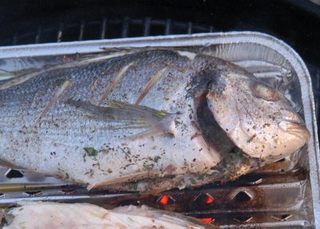

| Hauptspeise für 4 Personen; | |
| 2 - 3 | Doraden (ca. 1kg) küchenfertig |
| 4 | Limetten |
| 1 Bund | glattblättrige Petersilie |
| 4 Zweige | Oregano |
| 1 El | Meersalz |
| Pfeffer aus der Mühle |
|
| 0.5 dl | Olivenöl |
Zubereitungszeit: ca 25 Minuten
Doraden sorgfältig waschen und mit Küchenpapier gut trocken.
2 Limetten filetieren (Schale bis auf das Fruchtfleisch wegschneiden und die Schnitze mit einem scharfen Messer aus den Trennhäuten herauslösen). Restliche Limetten auspressen. Kräuter fein hacken.
Die Fische innen und aussen salzen und mit Pfeffer würzen. Limettenfilets und Kräuter in die Bauchhöhle legen. Fische mit wenig Olivenöl bestreichen.
Den Grillrost mit Alufolie belegen und diese mit wenig Öl bestreichen. Die Fische je nach Grösse bei mittlerer Glut pro Seite 8-10 Minuten grillieren. Die Doraden filetieren, mit Limettensaft und dem restlichen Olivenöl beträufeln und heiss oder lauwarm servieren.
Dazu passen Grillkartoffeln oder Frischback Focaccia (auf dem Grillrost aufgebacken) und Salat.
Pro Person: 50g Eiweiss, 18g Fett, 5g Kohlenhydrate, 1550kJ, 370kcal
Migros, Rezeptbroschüre
Ganz OK. Vorsicht mit der Hitze auf dem Grill damit der Fisch nicht am Grillrost kleben bleibt. Schönes Fleisch wenn auch eher auf der trockenen Seite. RE, 2.8.2003
Gelang auf einer Aluschale ganz toll. RE 29.4.2010
@LINKBACK_TAG@ @WAKELOCK@